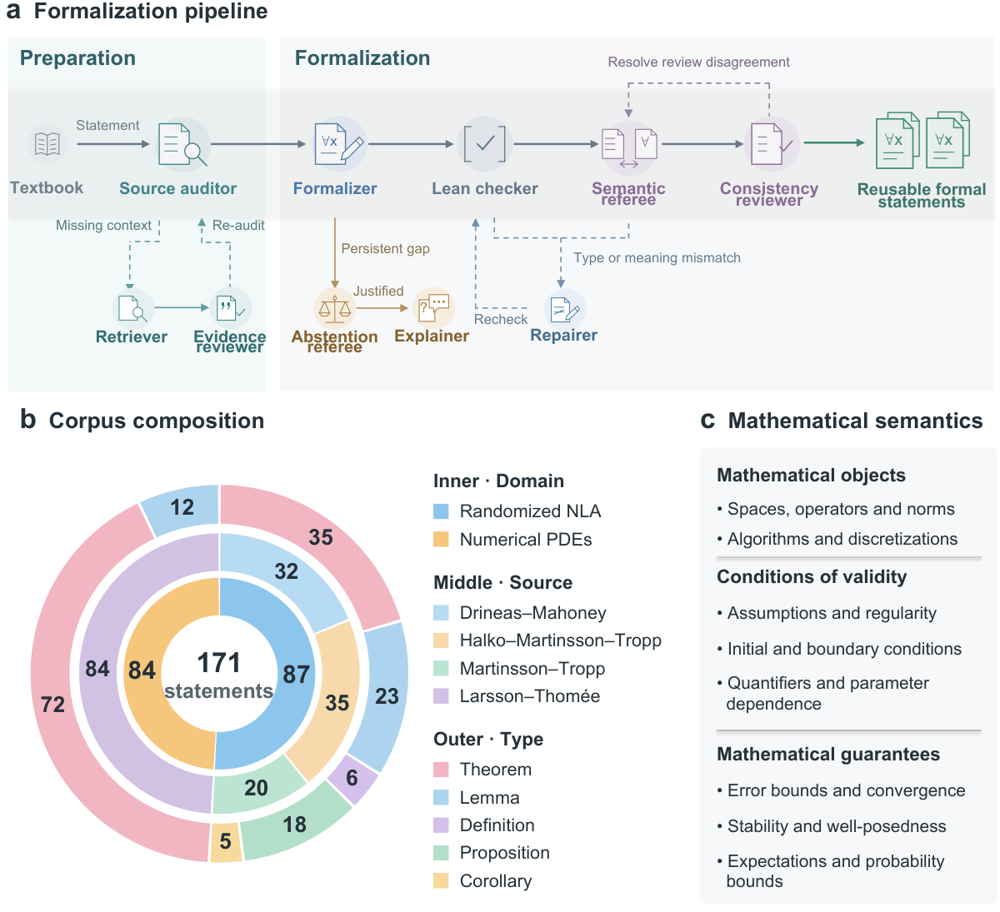
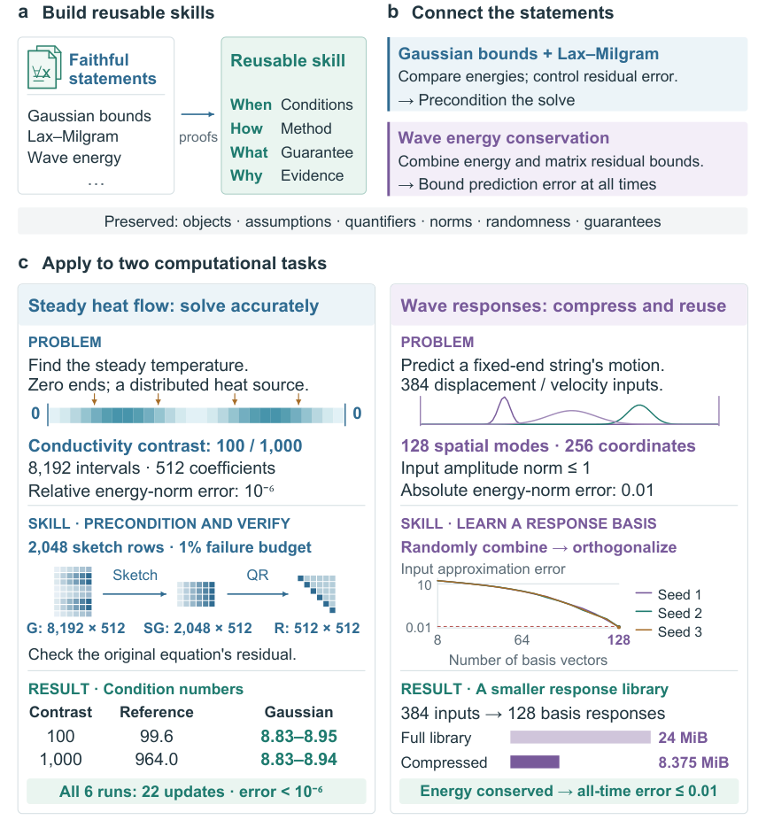
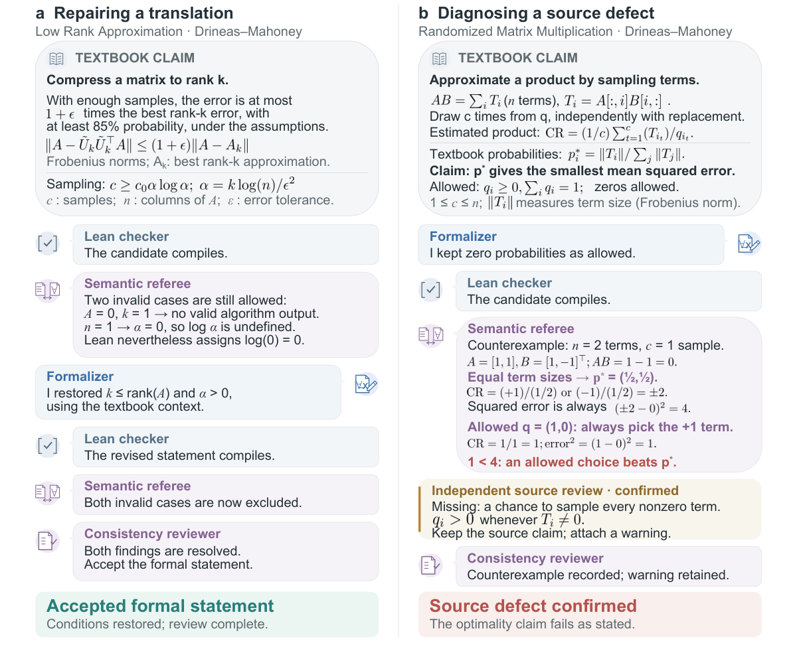

An LLM-agent pipeline formalizes numerical linear algebra and PDE textbook statements as Lean declarations, then chains them via Lean-checked implications using Mathlib.
Abstract
Automated computational science could accelerate discovery by selecting, adapting and developing numerical methods. This prospect requires mathematical knowledge that AI systems can interpret and reuse with explicit guarantees. Here we present FARMS, a faithful and efficient foundation that transforms computational mathematics into AI-ready computing knowledge. FARMS connects formal statements to source context, algorithmic meaning and quantitative guarantees through source preparation, reusable representations and semantic review. Across 171 targets in randomized numerical linear algebra and numerical partial differential equations, 157 were accepted by the pipeline, with mean estimated costs of US \$0.85-2.29 per target across sources. Lean-checked implications from explicit source premises connect selected statements to computational skills, illustrated by a heat-flow solve and wave-response compression. FARMS therefore supports an affordable, reusable knowledge foundation for trustworthy automated computational science.
Problem
Automated computational science needs mathematical knowledge from computational mathematics that AI systems can interpret and reuse with explicit guarantees. That knowledge must stay faithful to the conditions linking each method to its guarantees.
Approach
FARMS is a multi-agent pipeline. A Source auditor, Retriever and Evidence reviewer assemble the context for each statement. A Formalizer then builds Lean statements against a shared domain library, and a Lean checker compiles them. A Semantic referee reviews faithfulness, with bounded repair and justified abstention. Selected statements are then linked through Lean-checked implications, using Mathlib results, to form reusable agent skills.

Figure 1: FARMS builds AI-ready computing knowledge for automated computational science. a , Source preparation links mathematical statements to supporting definitions, assumptions and algorithm descriptions. Formalization combines this evidence with reusable domain representations, followed by compilation, semantic review and bounded repair. Dashed paths show source re-auditing, repair and rechec

Figure 3: From faithful formal statements to numerical agent skills. a, Formal statements and connecting proofs form reusable skills that contain applicability conditions and link results to supporting evidence. b, Gaussian bounds and Lax–Milgram support an energy comparison that controls solve accuracy; wave energy conservation and a matrix residual bound support response compression. c, Represen
Results
Of 171 targets from four sources in randomized numerical linear algebra and numerical PDEs, 157 were accepted, at mean estimated costs of US$0.85–2.29 per target. Semantic review exposed defects such as omitted rank and logarithm-domain restrictions. The resulting skills were demonstrated on a heat-flow solve and on wave-response compression.

Figure 2: FARMS refines formalization results and identifies defects in textbook claims. a, Agent interaction during the formalization of a randomized low-rank approximation guarantee. Although the initial candidate compiles, the Semantic referee identifies omitted rank and logarithm-domain restrictions that change the intended claim. Using evidence from the textbook context, the Formalizer restor